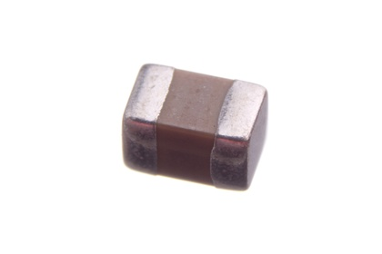
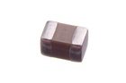
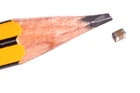

SMD (0805) 10 uF Capacitor (Ceramic) - C85U010

Summary
Name: SMD (0805) 10 uF Capacitor (Ceramic)
ID: CAPC-0805-X-UF10-01
Hex ID: C85U010
WebPage: https://github.com/oomlout/oomlout-OOMP/wiki/CAPC-0805-X-UF10-01
Short URL: http://oom.lt/C85U010
Revision History: https://github.com/oomlout/oomlout-OOMP/blob/master/parts/CAPC-0805-X-UF10-01/
| Type |
Size |
Color |
Description |
Index |
CAPC
Capacitor (Ceramic) |
0805
SMD (0805) |
X
|
UF10
10 uF |
01
|
Images


About
This part is awaiting a description.
Specifications
| Info |
Value |
| Type |
Capacitor (Ceramic) |
| Size |
SMD (0805) |
| Description |
10 uF |
| Width |
1.25 mm |
| Length |
2.0 mm |
| Maximum Voltage |
25 V |
| Tolerance |
10% |
Extra Details
Spotted a mistake, want to add more? Let us know oomp@oomlout.com
All images and resources are licensed [CC BY-SA] unless otherwise stated (ie. the datasheets)